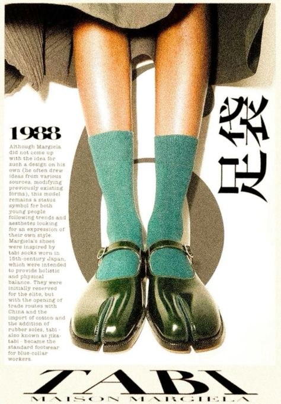

Let's talk about trends. Fashion can sometimes be harmful due to the pressure to follow trends and fit in. This ongoing pressure to conform to popular trends can lead to a cycle of overconsumption in which people feel driven to buy new garments on a regular basis, often at the expense of their particular style and beliefs. It can lead to feelings of inadequacy, as people may compare themselves to others and believe they don't measure up if they don't wear the latest trends. This desire to fit in can restrict individuality and innovation, making fashion feel more like a competition than a vehicle of self-expression. The emphasis on trends can overwhelm the joy of discovering what actually connects with us, transforming fashion into a source of worry rather than inspiration. Over time, I've noticed that trends rarely represent who I am or what I genuinely like to wear, and I've found myself avoiding most trends. Instead, I've gravitated toward creating a timeless wardrobe that reflects my own personality, one that isn't influenced by what's popular but rather by what I truly enjoy and feel good in. The disadvantage of trends, in my opinion, is that they frequently mask the deeper, longer-lasting value of personal style and authenticity.
>